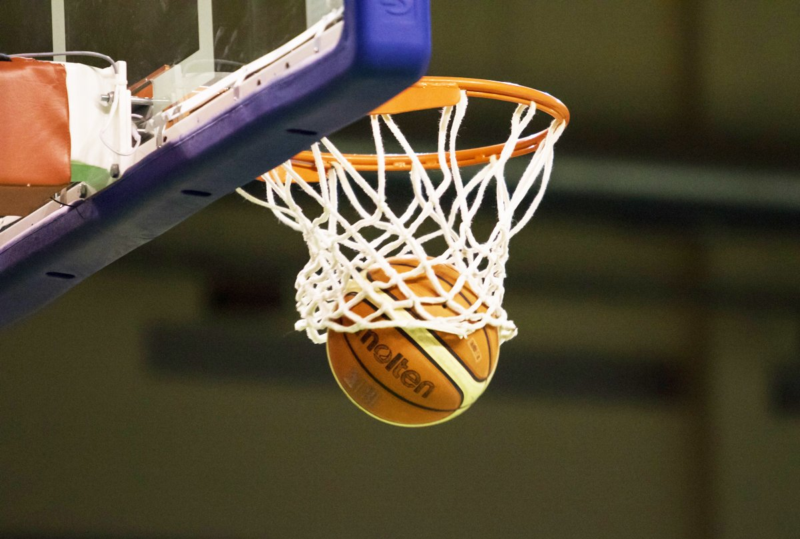

Basketbols ir sporta veids, kurā divas komandas ar pieciem spēlētājiem katrā cenšas gūt punktus, iemetot bumbu pretinieku grozā, ievērojot noteikumus. 1891. gad decembrī Makgilas universitātes fiziskās kultūras doktors Džeimss Neismits radīja iekštelpu sporta spēli, lai skolēni saglabātu labāku fizisko kondīciju Jaunanglijas štata aukstajās ziemās. Ar laiku basketbols attīstījās un tagad to spēlē visā pasaulē.

Basketbolā ir gan vīriešu basketbola asociācija Nacionālā basketbola asociācija, kas ir NBA, gan Sieviešu Nacionālā basketbola asociācija, kas ir WNBA
| Vecuma grupa | Dzimšanas gads |
|---|---|
| U12 | 2012.gads |
| U13 | 2011.gads |
| U14 | 2010.gads |
| U15 | 2009.gads |
| U16 | 2008.gads |
| U17 | 2007.gads |
| U19 | 2005.gads/2006.gads |
| Jaunieši | Vecumi | Jaunietes | Vecumi |
|---|---|---|---|
| Puiši | U14 | Meitenes | U14 |
| Puiši | U15 | Meitenes | U15 |
| Puiši | U16 | Kadetes | U16 |
| Puiši | U18 | Juniores | U17 |
| Puiši | U19 | Juniores | U18 |
| Puiši | U20 | Sievietes | U19 |
| Nav | Nav | Sievietes | U20 |
Basketbolu spēlē uz laukuma reizē 5 spēlētāji un viņiem katram ir savs nosaukums:
Spēles pamatprincips ir gūt pēc iespējas vairāk punktu nekā pretinieks. Precīzs soda metiens ir viena punkta vērts, metiens no laukuma ir divu punktu vērts, bet precīzs trapījums aiz trīspunktu līnijas, kas pēc NBA noteikumiem — 7,24 metrus no groza, dos trīs punktus. Sist pa rokām, grūst mugurā arī ir aizliegts. Vairāk par noteikumiem klikšķināt uz pogas mājaslapas augšā!